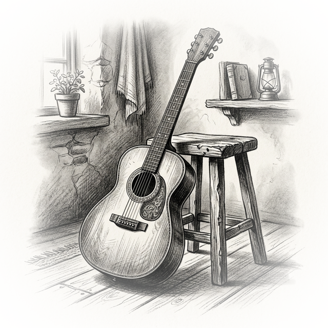

Creating Authentic Acoustic Folk, Alt-Country, and Indie Tunes in Bitwig Studio: A Comprehensive Guide to MIDI-Based Production
The digital age has brought a unique challenge to music producers: how do we create the warm, organic, and inherently imperfect sounds of folk, alt-country, and indie rock entirely inside a digital audio workstation (DAW) using only MIDI and plugins? Acoustic genres thrive on human connection, the slide of fingers across a fretboard, the subtle timing variations of a live band, and the rich harmonic resonance of wooden instruments. Trying to replicate this with preset instruments and rigid MIDI grids often results in a sterile, overproduced, or synthetic sound.
However, with the right techniques, meticulous attention to detail, and the modular powerhouse that is Bitwig Studio, you can craft incredibly realistic, soulful acoustic music without ever plugging in a microphone. This comprehensive guide will walk you through the entire process, from setting up your Bitwig project to composing realistic MIDI guitars, designing organic textures, mixing acoustic instruments, and mastering for folk genres.
1. Building the Foundation: Workflow and Bitwig Device Routing
Starting from a blank project in Bitwig Studio, your first goal is to establish a workflow that encourages creativity rather than repetitive clicking. Bitwig excels at modular routing, which can be leveraged to quickly build complex, layered acoustic templates.
Instead of writing complex MIDI patterns on every single track, you can utilize a central "guide" MIDI track. By inserting a Note Receiver device on auxiliary tracks, you can funnel the MIDI data from your main guide track to various instruments like virtual pianos, background string plucks, or ambient synths.
To keep your folk progressions harmonically locked, you can place a Diatonic Transposer in your device chain, ensuring that no matter what you play, the notes stay within your chosen key (e.g., E minor). If you want to add rhythmic motion to background textures without programming them by hand, insert Bitwig’s Arpeggiator. A crucial, often overlooked feature of the Bitwig Arpeggiator is the Humanize function. For indie and folk music, sterile quantization is the enemy. The Humanize feature gently pushes individual notes slightly late or early, adding an imperfect, natural swing that breathes life into rigid MIDI chords.
Once you have crafted a perfect chain of devices—for instance, a Note Receiver, Diatonic Transposer, Arpeggiator, and an EQ—you can group them into a Chain Device and save it as a preset. This allows you to instantly recall your complex routing on future tracks, maintaining a fast and intuitive workflow.

2. The Art of Realistic MIDI Guitars
Acoustic guitars are the backbone of folk and alt-country. Programming them via MIDI is notoriously difficult because a piano keyboard and a guitar fretboard operate fundamentally differently. If you approach a MIDI guitar like a pianist, the result will immediately sound fake.
Understanding Guitar Mechanics and Voicings
To sequence realistic guitars, you must understand how the instrument is played. A standard guitar has six strings, typically spaced about five semitones apart. Therefore, you cannot play a cluster of tight notes (like a C-E-G piano triad) and expect it to sound natural, because those notes would naturally overlap on the same string on a real guitar.
Instead, guitar voicings are spread out. A C major chord on a guitar might be voiced with the C as the root, the G on the next string down, and the E much higher up. When programming, always try to use chord generators or DAW features that allow you to specifically select "guitar voicings" rather than keyboard voicings. Furthermore, a guitarist cannot play a chord where all six strings are struck at the exact same millisecond. To mimic a realistic strum, you must manually stagger your MIDI notes, creating a rapid "waterfall" effect from the lowest string to the highest (for a downstroke), or highest to lowest (for an upstroke).
Humanizing Velocity and Timing
If all your MIDI notes are locked perfectly to the grid at a maximum velocity of 127, the instrument will sound robotic. A real performance features dynamic variations. Gently vary the velocities of your strummed notes; perhaps the root note is struck harder, while the higher strings ring out softer. Nudge entire chords slightly ahead of or behind the grid to mimic the push and pull of a live player. Incorporate "ghost notes"—faint, percussive up-picks or down-picks at low velocities—between your main chords to add rhythmic bounce and realism.
Plugin Selection and "DI" Processing
For the sound source, high-quality libraries like Native Instruments' Session Guitarist series (Picked Acoustic, Electric Sunburst, Electric Mint) are incredibly powerful. They utilize recorded loops and patterns, allowing you to trigger palm mutes, open strums, and specific rhythms with key switches.
Here is the ultimate secret to making these libraries sound like authentic records: turn off their built-in effects and amp simulators to output a raw DI (Direct Input) signal. The built-in effects are often generic. By printing the raw DI, you can route the guitar through dedicated, high-end third-party amp simulators like Neural DSP (Tone King Imperial, Cory Wong) or process the acoustic DI with your own careful EQ and saturation. This provides a custom, authentic tone that doesn't sound "baked in." Finally, layer in a faint audio loop of actual guitar fret noise or string squeaks to trick the ear into believing the performance is human.

3. Composing Folk Progressions and Melodies
Folk and alt-country music is driven by storytelling, meaning the instrumentation should support the emotion rather than distract from it. When writing progressions, simplicity is key. A classic 4-5-6 progression is one of the easiest ways to evoke an emotional, pretty sound, especially when played higher up on the neck of an acoustic guitar.
To create contrast, let your verses bounce between simple major chords, but when the chorus hits, drop into a minor chord. This immediately adds depth, gravity, and emotional weight to the song, creating the classic "crying in the shower" indie folk vibe.
For melodic instrumentation, an upright piano is highly preferable to a pristine grand piano. An upright inherently possesses a vintage, slightly dusty, and intimate texture that fits perfectly in a virtual "living room" space. When recording your piano or drum MIDI, avoid clicking notes in with a mouse. Play them on a MIDI controller, even if you make mistakes. Playing physically allows you to react to the music dynamically, preserving the authentic human feel necessary for the genre.

4. Using Sound Design for Organic Textures
Even if you are working purely in the box, you can use sound design to craft lush, organic atmospheres. Rather than settling for a static synth pad, use Bitwig's robust modulation system to breathe life into basic patches.
If you have a simple choir sample or a synth chord progression that feels stagnant, map a Bitwig LFO or multi-stage envelope to a low-pass filter. The gentle opening and closing of the filter will make the chords evolve over time, transforming a boring pad into something ethereal and lustrous. You can also assign Bitwig's Macros to parameters like reverb decay, slight pitch detuning, or octave layers. By automating these macros throughout the arrangement, you create a song that constantly shifts and elaborate its textures without needing to write entirely new parts.
For traditional folk instrumentation, look toward specialized libraries. Spitfire LABS (and the LABS+ expansion) is fantastic for injecting cinematic, moody textures, organic pads, and unusual percussive elements into your background. To achieve the iconic crying sound of country music, utilize a pedal steel plugin like Ink Audio's Ink Steel, taking advantage of pitch wheels to slide between notes. For a melancholic, human touch, libraries like Indigenous Sounds' Fiddle add the weeping swells that define the genre.
You can also engineer a "faux lap-steel" using a standard electric guitar VST. Roll off the tone knob to make it warm, play long sustained notes with heavy pitch-bending, and crush it with aggressive compression (like Soundtoys' Devil-Loc) to grant the notes endless, screaming sustain.
When it comes to drums, avoid massive rock kits or electronic samples. You want a kit that sounds like it is being played lightly in a small room. Libraries like EZDrummer's Singer-Songwriter EZX or Addictive Drums 2 provide incredibly authentic, mellow drum sounds. Keep the programming simple: a gentle kick, a side-stick snare, and subtle hi-hats, slowly introducing a ride cymbal for the choruses.
5. Mixing Techniques for Acoustic Genres
Mixing acoustic music inside a DAW requires a delicate touch. The goal is to enhance clarity and glue the artificial tracks together without squashing the life out of them.
EQing Acoustic Instruments
Acoustic guitars occupy a massive portion of the frequency spectrum and can easily muddy a mix. Employ these four essential EQ moves to clean up your MIDI acoustics:
- Cut the Rumble: Apply a high-pass filter around 40Hz to 50Hz. Acoustic guitars offer nothing musical in this sub-bass region, and removing it frees up headroom and prevents your compressors from overworking.
- Cut the Thump: There is often a heavy, percussive low-mid build-up around 150Hz that occurs on the down-strum. Find this frequency with a narrow boost, then pull it down to balance the guitar without removing its inherent warmth.
- Cut the Plastic: Virtual guitars can sometimes sound cheap or "boxy." Scoop out the harsh mid-range frequencies around 800Hz. This acts as a sophisticated "smiley face" EQ, unmasking the deep lows and crisp highs.
- Boost the Air: To help the guitar cut through a dense indie-folk mix, add a subtle high-shelf boost around 8kHz. This highlights the sound of the pick hitting the strings without muddying the fundamental tones.
Use Bitwig’s native EQ-5 for these surgical cuts, utilizing its expanded device view to sweep the frequency spectrum easily.
Compression, Saturation, and Transients
Because acoustic instruments are highly percussive, they have aggressive transients (the initial attack of the sound). Over-compressing them will make the track sound flat and lifeless. Instead of a standard heavy compressor, use tape saturation, such as Softube Tape, to naturally tame harsh transients while adding a pleasing, warm harmonic glue. For pinpoint control over aggressive clicks, a transient shaper like Waves TransX works much faster than standard compression to smooth out the attack.
In Bitwig, you can utilize the Compressor+ device set to "Saturate" mode to impart an analog, tape-like compression to your acoustic melodies. For supreme dynamic control, you can even build your own Multiband Compressor using Bitwig’s Multiband FX-3. This splits the audio into Low, Mid, and High bands. By inserting a Dynamics processor into each slot, you can compress the muddy low-mids aggressively while leaving the airy highs largely uncompressed, mapping the thresholds to Bitwig Macros for easy tweaking.
Panning and Reverb
To maintain a natural, "live in the room" aesthetic, avoid hard panning everything 100% left or right. Instead, pan instruments slightly off-center (e.g., an acoustic guitar 30% left, an electric 30% right). This creates subtle contrast while keeping the mix focused and intimate.
To make completely separate MIDI instruments feel like a cohesive band, send them all to a single auxiliary Reverb track. A high-quality plate reverb (like Abbey Road Plate) or a lush room emulation (like Valhalla Room) will cast the illusion that the upright piano, acoustic guitar, and drums were all recorded in the exact same physical space.
6. Mastering for Folk Music
Mastering folk music is uniquely challenging. It requires a balance: it must be dynamic enough to sound natural and intimate, yet loud enough to compete on modern streaming platforms.
Dynamics and Compression
A folk master should be more dynamic than pop, but more controlled than classical music. Avoid heavy brickwall limiting. Instead, utilize parallel compression to bring up the low-level details of the mix while completely preserving the sharp transients of the original acoustic plucks. When using compression on the master bus, opt for optical compression with a soft knee. A slower attack time paired with a faster release will allow the natural snap of the instruments to pass through unaffected, gently clamping down only on the loudest peaks to create a tranquil, smooth sound.
EQ and Harmonic Distortion
When applying EQ to a folk master, always use broad, musical bandwidths. A Q setting of roughly 0.667 (a two-octave bandwidth) ensures that any boosts or cuts (kept minimal, around 0.5 to 1 dB) sound incredibly natural and do not abruptly shift the song's timbre.
Adding 1% to 2% of Total Harmonic Distortion (THD) via high-quality analog emulation plugins can work wonders. Harmonic generation fills the gaps in the frequency spectrum, creating a master that feels significantly fuller, warmer, and more reminiscent of the genre's heyday. Note: Saturation naturally compresses the signal, so back off your primary compressors if you are driving analog emulations.
Stereo Width and Loudness
To widen the master without causing phase issues, utilize Mid/Side equalization. A fantastic trick to add shimmering width to a folk track is to apply a high-shelf boost above 7kHz specifically to the Side image. This accentuates the air and the higher harmonics of the acoustic guitars, spreading them beautifully across the stereo field.
Finally, target your overall loudness carefully. For streaming services, aiming for an integrated loudness of -14 LUFS is a perfect starting point that retains the genre's necessary dynamic range. If your track is extremely sparse—perhaps just a single MIDI acoustic guitar and a vocal—do not push it to match the loudness of a fully arranged pop-rock track, as it will sound unnatural and harsh. Balance the perceived loudness of the lead melody across your entire album to ensure a smooth, cohesive listening experience.
By treating your MIDI programming with the mindset of a live musician, utilizing Bitwig's brilliant modular devices for dynamic variation, and applying careful, analog-style mixing and mastering techniques, you can produce deeply authentic, professional acoustic music entirely within your bedroom studio.